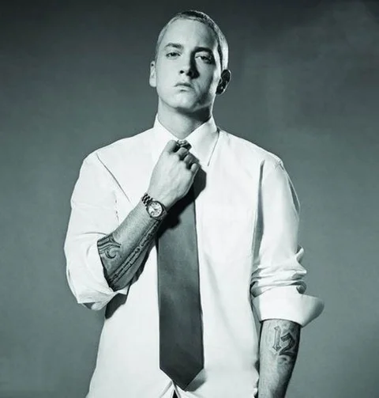

História:
Marshall Bruce Mathers III, mais conhecido pelo seu nome artístico Eminem (St. Joseph, 17 de outubro de 1972), é um rapper, compositor, produtor musical e ator estadunidense. Adquiriu rápida popularidade em 1999 com o lançamento do disco The Slim Shady LP, o qual venceu o Grammy Award de Melhor Álbum de Rap do ano. O seu próximo trabalho, The Marshall Mathers LP, se tornou o álbum solo mais vendido na história dos Estados Unidos. Tal fato o tornou conhecido no mundo inteiro, e ajudou para a divulgação de sua gravadora, a Shady Records, e do seu grupo, o D12.
The Marshall Mathers LP e o seu terceiro disco, The Eminem Show, também conquistaram o Grammy Awards, tornando ele o primeiro artista a conquistar o prêmio de Melhor Álbum de Rap do ano por três vezes consecutivas. Em 2003, venceu o Oscar de melhor canção original com "Lose Yourself", que esteve presente no seu filme semi-biográfico, 8 Mile. "Lose Yourself" iria se tornar o single que por maior tempo ocupou a primeira posição das paradas de hip hop. Em 2004, boatos sobre o fim de sua carreira foram anunciados após o lançamento do álbum Encore, que foram encerrados com o anunciação de Relapse, oficialmente disponibilizado em 15 de maio de 2009.
De acordo com a Nielsen SoundScan, Eminem é o artista que mais vendeu na década nos Estados Unidos e atualmente está na 30ª posição de recordistas de vendas de discos da história do país segundo o ranking da RIAA, e no mundo tem cerca de 115 milhões de álbuns vendidos, tornando-o um dos artistas recordistas de vendas de discos. Em 2010, lançou Recovery, no qual estava presente o single "Love the Way You Lie", que foi um enorme sucesso comercial. Recovery tornou-se o sexto álbum consecutivo de Eminem a estrear na primeira posição das paradas do Estados Unidos. De início, o álbum ficou por cinco semanas consecutivas no topo, retornando posteriormente para outras duas, e somando sete semanas em primeiro lugar, no total.
Eminem foi escolhido como o 79º na lista dos "100 Melhores Artistas de Todos os Tempos" da VH1. Em uma lista similar, foi ranqueado em 82º pela revista Rolling Stone. Incluindo o trabalho com o D12, Eminem acumula 9 álbuns no topo da Billboard Top 200, sendo 7 solo (6 de estúdio, 1 compilação) e 2 com o D12. Ele tem 13 singles na primeira posição em todo o mundo. Tal sucesso fez Eminem ser reconhecido pela Billboard como o Artista da Década. De acordo com a mesma Billboard, o rapper teve dois dos cinco álbuns mais vendidos entre 2000 e 2009. Eminem também já vendeu mais de 17 milhões de downloads de suas músicas apenas nos Estados Unidos. Em 2010, a MTV classificou Eminem como o sétimo maior ícone da história da música pop.
Em 2009, Eminem foi eleito, em votação popular, o melhor rapper de todos os tempos pela revista Vibe, vencendo Tupac na final. As composições de Eminem rendeu controvérsias; alguns críticos consideraram as suas letras como misógenas e homofóbicas, com características de discurso de ódio. Em 2006, a ABC News intitulou-o como o "músico mais polêmico do novo milênio".
Infância e juventude Nascido em St. Joseph, Missouri, foi o único filho de Deborah Nelson Mathers-Briggs e Marshall Bruce Mathers, Jr. Sua ascendência é diversificada, incluindo ancestrais escoceses, galeses, ingleses, alemães, suíços, polacos e possivelmente luxemburgueses. Seu pai abandonou a família quando ele tinha um ano e meio, e Marshall foi criado apenas pela mãe em condições de pobreza. Aos doze anos, ele e a sua mãe Deborah já haviam se mudado várias vezes e vivido em diversas cidades e vilas de Missouri (incluindo Saint Joseph, Savannah e Kansas City), antes de se estabelecerem em Warren, Michigan, um subúrbio de Detroit.
Após ter obtido uma cópia do álbum Licensed to Ill, do grupo Beastie Boys quando era adolescente, Marshall se interessou pelo hip hop, fazendo raps amadores aos 14 anos, sob o pseudônimo de "M&M". Pouco tempo depois, ele entrou no grupo Bassmint Productions, que lançou um EP intitulado Steppin' onto the Scene. Após o lançamento do EP, Marshall saiu do grupo e mudou seu nome artístico para "Soul Intent" e lançou em 1995 seu primeiro single, chamado "Fuckin' Backstabber", sob a gravadora independente Mashin' Duck Records.
Apesar de ser aluno da Lincoln High School em Warren, ele frequentemente participava de batalhas de freestyle (improviso) na extinta Osborn High School, no lado leste de Detroit. Apesar da maior parte dos integrantes do movimento hip hop no seu estado serem descendentes de afro-americanos, Marshall acabou sendo bem aceito pelo público do hip hop underground. Após repetir a nona série duas vezes por faltas excessivas e notas baixas, ele abandonou a escola aos 17 anos.
Em 1991, seu tio materno, Ronald "Ronnie" Nelson, cometeu suicídio com um tiro de espingarda na cabeça. Marshall era muito próximo dele e ficou arrasado com tal fato; hoje, ele ostenta uma tatuagem no braço esquerdo com a escrita: "Ronnie R.I.P.".